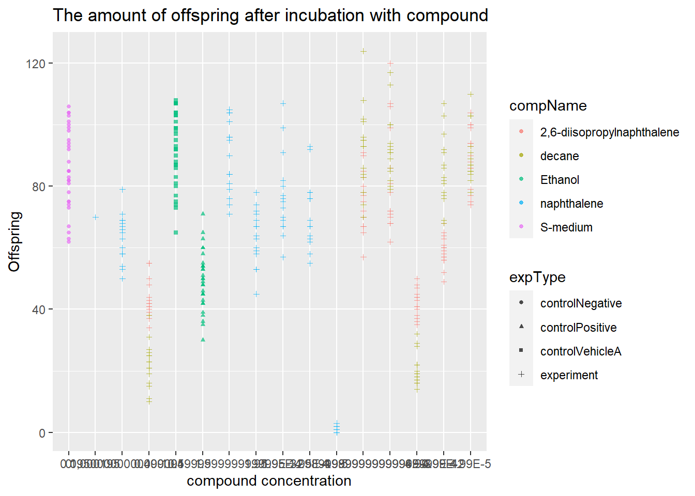

# Elegans experiment
About the exercise
In this exercise I have imported a dataset in Rstudio and created a scatterplot. During the exercise i encountered some problems with the data, the goal of this exercise is to fix the errors that occur and create a nice looking plot.
A
Review the following Excel file in the ./data/CE.LIQ.FLOW.062_Tidydata.xlsx (it’s here), by opening the file in Excel. See if you can spot anything peculiar about this file. Do not edit the file in any way. Just close it when you are done. (Annoyingly, Excel asks you to save your changes, even if you did not touch anything in the file: why is this cumbersome?)
There are a lot of different colours used, this makes it hard to read the data. Also the expData is a column without data.
B
Open the file in R, using the {readxl} package.
elegans_data <- read_excel(here("data_raw/CE.LIQ.FLOW.062_Tidydata.xlsx"))
elegans_data %>% head(10) ## # A tibble: 10 x 34
## plateRow plateColumn vialNr dropCode expType expReplicate expName expDate expResearcher expTime expUnit expVolumeCounted RawData
## <lgl> <lgl> <dbl> <chr> <chr> <dbl> <chr> <dttm> <chr> <dbl> <chr> <dbl> <dbl>
## 1 NA NA 1 a experi~ 3 CE.LIQ~ 2020-11-30 00:00:00 Sergio Reijn~ 68 hour 50 44
## 2 NA NA 1 b experi~ 3 CE.LIQ~ 2020-11-30 00:00:00 Sergio Reijn~ 68 hour 50 37
## 3 NA NA 1 c experi~ 3 CE.LIQ~ 2020-11-30 00:00:00 Sergio Reijn~ 68 hour 50 45
## 4 NA NA 1 d experi~ 3 CE.LIQ~ 2020-11-30 00:00:00 Sergio Reijn~ 68 hour 50 47
## 5 NA NA 1 e experi~ 3 CE.LIQ~ 2020-11-30 00:00:00 Sergio Reijn~ 68 hour 50 41
## 6 NA NA 2 a experi~ 3 CE.LIQ~ 2020-11-30 00:00:00 Sergio Reijn~ 68 hour 50 35
## 7 NA NA 2 b experi~ 3 CE.LIQ~ 2020-11-30 00:00:00 Sergio Reijn~ 68 hour 50 41
## 8 NA NA 2 c experi~ 3 CE.LIQ~ 2020-11-30 00:00:00 Sergio Reijn~ 68 hour 50 36
## 9 NA NA 2 d experi~ 3 CE.LIQ~ 2020-11-30 00:00:00 Sergio Reijn~ 68 hour 50 40
## 10 NA NA 2 e experi~ 3 CE.LIQ~ 2020-11-30 00:00:00 Sergio Reijn~ 68 hour 50 38
## # ... with 21 more variables: compCASRN <chr>, compName <chr>, compConcentration <chr>, compUnit <chr>, compDelivery <chr>, compVehicle <chr>,
## # elegansStrain <chr>, elegansInput <dbl>, bacterialStrain <chr>, bacterialTreatment <chr>, bacterialOD600 <dbl>, bacterialConcX <dbl>,
## # bacterialVolume <dbl>, bacterialVolUnit <chr>, incubationVial <chr>, incubationVolume <dbl>, incubationUnit <chr>, incubationMethod <chr>,
## # incubationRPM <dbl>, bubble <lgl>, incubateTemperature <dbl>C
Inspect the data types of columns RawData, compName and compConcentration. What types would you expect from the experimental description above. Have the data types been correctly assigned during the importing of the data into R?
The compConcentration is a character column and you would expect an numeric column, the data is imported incorrectly
D
Create a graph displaying a scatterplot for the CE.LIQ.FLOW.062_Tidydata.xlsx data, for the different compounds and the varying concentrations. Put the compConcentration on the x-axis, the DataRaw counts on the y-axis and assign a colour to each level in compName. Assign a different symbol (shape =) to each level in the expType variable. Try fixing the labels of the x-axis so that we can read them.
## Warning: Removed 5 rows containing missing values (geom_point).
E
When creating the plot under C), what happened with the ordering of the x-axis labels. Explain why this happens. Look at the data-type of the compConcentration column in the data again to find a clue.
is.numeric(elegans_data$compConcentration)## [1] FALSEThe data is not numeric, this means that every concentration is seen as a separate point.
F
Correct the data-type of compConcentration to numeric and than look at the graph again. Use a log10 transformation on the x-axis to get a clear graph. Also, add a bit of jitter to the points in the graph so that points are not overlapping.
#make the data numeric
elegans_filter$compConcentration <- as.numeric(elegans_filter$compConcentration) ## Warning: NAs introduced by coercion#add a column with the log of the concentration
elegans_filter_log <- elegans_filter %>% mutate(conc_log = log(elegans_filter$compConcentration))
#make a graph
ggplot(data = elegans_filter_log, aes(x = conc_log, y = RawData)) +
geom_jitter(aes(colour = compName, shape = expType), alpha = 0.7, size =1) +
labs(x = "compound concentration",
y = "Offspring",
title = "The amount of offspring after incubation with compound")## Warning: Removed 6 rows containing missing values (geom_point).
G & H
The positive control for this experiments is ethanol. (H) The negative control for this experiment is S-medium.
I
Think about how you would analyze this experiment to learn whether there is indeed an effect of different concentrations on offspring count and whether the different compounds have a different curve (IC50). Write down you analysis as a step-wise plan
To prove that there is a significant difference between the positive control and the samples we first need to preform a shapiro test. Than we perform a ANOVA test.
J
Normalize the data for the controlNegative in such a way that the mean value for controlNegative is exactly equal to 1 and that all other values are expressed as a fraction thereof. Rerun your graphs with the normalized data.
#calculate the mean RawData of s-medium
mean_elegans_data <- elegans_data %>%
select(RawData, compName, compConcentration) %>%
filter(compName == 'S-medium') %>%
group_by(compName) %>% summarise(mean_RawData = mean(RawData))
#express all the values to a fraction of the normalized data
normalized_elegans_data <- elegans_data %>%
select(compName, compConcentration, RawData) %>%
mutate(Normalized_RawData = RawData / mean_elegans_data$mean_RawData)
mean_normalized_elegans_data <- normalized_elegans_data %>%
group_by(compName, compConcentration) %>%
summarise(mean_normalized_RawData = mean(Normalized_RawData))
mean_normalized_elegans_data## # A tibble: 22 x 3
## # Groups: compName [5]
## compName compConcentration mean_normalized_RawData
## <chr> <chr> <dbl>
## 1 2,6-diisopropylnaphthalene 0.499 0.504
## 2 2,6-diisopropylnaphthalene 4.9899999999999996E-3 0.875
## 3 2,6-diisopropylnaphthalene 4.9899999999999999E-4 0.967
## 4 2,6-diisopropylnaphthalene 4.99 0.470
## 5 2,6-diisopropylnaphthalene 4.99E-2 0.687
## 6 2,6-diisopropylnaphthalene 4.99E-5 1.04
## 7 decane 0.499 0.257
## 8 decane 4.9899999999999996E-3 1.07
## 9 decane 4.9899999999999999E-4 1.08
## 10 decane 4.99 0.238
## # ... with 12 more rowsmean_normalized_elegans_data %>% ggplot(aes(x = compConcentration, y = mean_normalized_RawData)) +
geom_point() +
geom_jitter(aes(colour = compName, shape = compName)) +
labs(x = "compound concentration",
y = "Offspring",
title = "The amount of offspring after incubation with compound")## Warning: Removed 1 rows containing missing values (geom_point).
## Warning: Removed 1 rows containing missing values (geom_point). ***
***
K
Why would you want to take the step under J?
This makes it easier to compare the samples to the “normal” value.